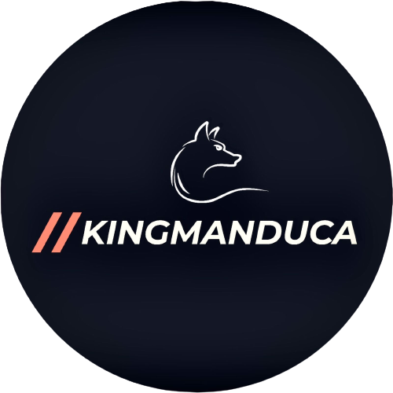

André Manduca

Sou um profissional entusiasmado e dedicado, buscando oportunidades para iniciar minha carreira na área de manutenção de computadores e desenvolvimento web. Com conhecimento teórico sólido e habilidades práticas adquiridas por meio de cursos e projetos pessoais, estou preparado para contribuir de forma positiva e crescer profissionalmente nesses campos.
Em relação à manutenção de computadores, tenho experiência em identificar e solucionar problemas de hardware e software. Sou capaz de realizar diagnósticos precisos, substituir componentes defeituosos, configurar sistemas operacionais e otimizar o desempenho de computadores. Possuo familiaridade com diferentes sistemas operacionais, como Windows e macOS, e estou sempre atualizado com as últimas tendências e avanços tecnológicos nessa área.
Além disso, desenvolvi habilidades em desenvolvimento web, incluindo conhecimentos sólidos em HTML, CSS e JavaScript. Sou capaz de criar interfaces responsivas e atraentes, utilizando frameworks como Bootstrap, e tenho experiência em desenvolvimento front-end e criação de sites estáticos. Estou sempre buscando aprender novas tecnologias e conceitos, aprimorando meu conhecimento em linguagens de programação como Python e frameworks como React.
Sou uma pessoa altamente organizada, capaz de trabalhar de forma independente e em equipe. Tenho excelente capacidade de resolução de problemas, sou proativo na identificação de oportunidades de melhoria e estou sempre em busca de atualização constante para me manter relevante no setor. Além disso, possuo uma boa habilidade de comunicação, o que me permite interagir efetivamente com clientes e colegas de trabalho.
Estou entusiasmado em iniciar minha carreira e aplicar meu conhecimento em manutenção de computadores e desenvolvimento web para contribuir com uma equipe dinâmica e desafiadora. Estou aberto a aprender com profissionais experientes e estou comprometido em desenvolver minhas habilidades e crescer dentro da empresa. Sou motivado, apaixonado por tecnologia e determinado a alcançar o sucesso profissional nesses campos.